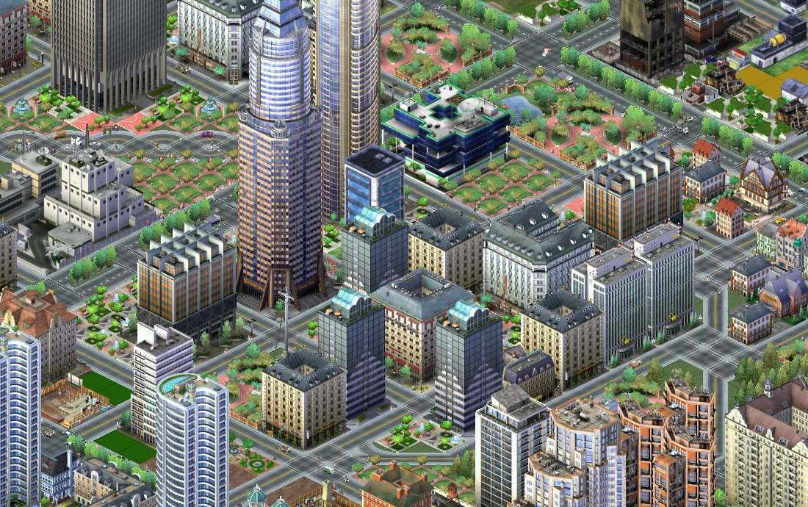
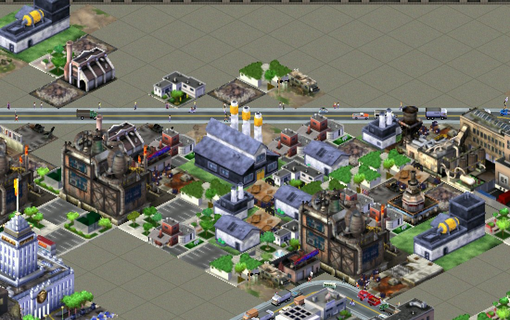
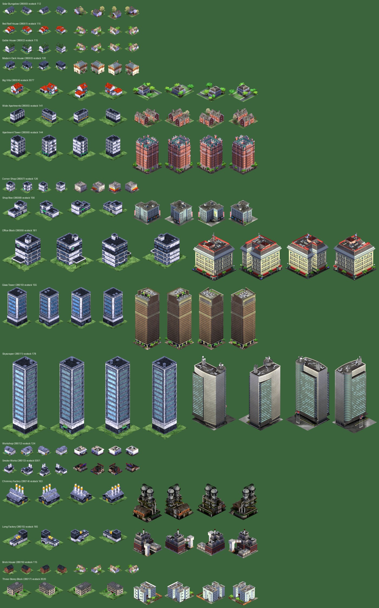
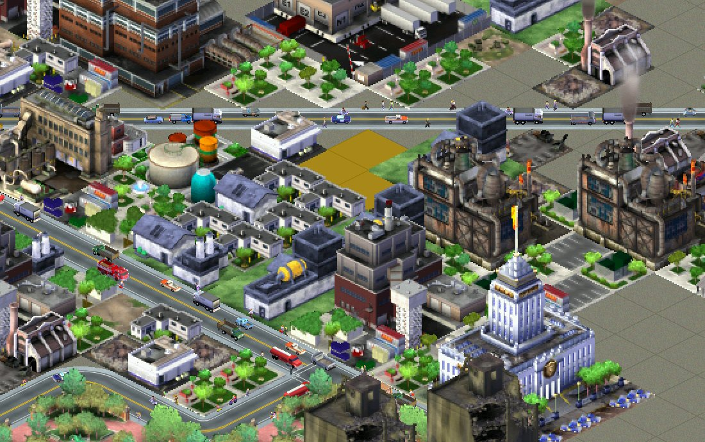

What the tool does
Each enabled model becomes a new growable building. The page draws it in the game's own camera at all five zoom levels and all four view rotations (20 pictures), on its own patch of lawn, and writes it into the game as a member of the building class you picked. From then on it grows on zoned lots of that class, like the stock buildings of the class, and takes its jobs, residents and pollution from a stock building of the same class and lot size.
Nothing stock is replaced. Your buildings join the stock ones in the same families, and the weight you give each one sets how often it is picked.

What it does not do
- Ploppable buildings (landmarks, rewards), airports and seaports. Only zoned growables for now.
- Lots that are not square. A building sits on a 1x1, 2x2, 3x3 or 4x4 lot, as every stock growable does.
- Night lights and animation. The stock houses have none either.
- File formats other than OBJ and the Building Architect's
.bld. Convert glTF, FBX or anything else to OBJ first (Blender does it).
The sample pack
18 buildings: 16 from Kenney's free city kits and 2 test models of ours. They cover residential, commercial and industrial classes from low to high wealth, on 1x1, 2x2 and 3x3 lots, with weight 2 each, near the stock weights of 1 to 3. In our tests in Sacramento and Berlin all 18 grew on their own. The Skyscraper (class 6700, dense high-wealth commercial) grew only after we made Berlin rebuild its commercial lots more often, because that class otherwise changes few lots.
Download the sample pack (zip)









| Building | Class | Lot | Size | Weight | Source |
|---|---|---|---|---|---|
| Solar Bungalow | 3100 Residential light, low wealth | 1x1 | 13 x 9 x 7 m | 2 | Kenney |
| Red Roof House | 3300 Residential light, mid wealth | 1x1 | 13 x 10 x 8 m | 2 | Kenney |
| Gable House | 3300 Residential light, mid wealth | 1x1 | 13 x 10 x 11 m | 2 | Kenney |
| Modern Dark House | 3500 Residential light, high wealth | 1x1 | 12 x 10 x 9 m | 2 | Kenney |
| Big Villa | 3500 Residential light, high wealth | 2x2 | 23 x 18 x 15 m | 2 | Kenney |
| Wide Apartments | 3700 Residential medium, low wealth | 2x2 | 23 x 10 x 16 m | 2 | Kenney |
| Apartment Tower | 4500 Residential dense, mid wealth | 2x2 | 18 x 18 x 30 m | 2 | Kenney |
| Corner Shop | 5100 Commercial light, low wealth | 1x1 | 11 x 13 x 11 m | 2 | Kenney |
| Shop Row | 5700 Commercial medium, low wealth | 2x2 | 28 x 17 x 15 m | 2 | Kenney |
| Office Block | 6100 Commercial medium, high wealth | 3x3 | 39 x 31 x 42 m | 2 | Kenney |
| Glass Tower | 6300 Commercial dense, low wealth | 2x2 | 24 x 24 x 52 m | 2 | Kenney |
| Skyscraper | 6700 Commercial dense, high wealth | 3x3 | 28 x 31 x 120 m | 2 | Kenney |
| Workshop | 8700 Industrial clean, light | 1x1 | 12 x 16 x 9 m | 2 | Kenney |
| Smoke Works | 8100 Industrial dirty, light | 1x1 | 15 x 12 x 15 m | 2 | Kenney |
| Chimney Factory | 8300 Industrial dirty, medium | 2x2 | 21 x 27 x 24 m | 2 | Kenney |
| Long Factory | 8900 Industrial clean, medium | 2x2 | 30 x 15 x 17 m | 2 | Kenney |
| Brick House | 3300 Residential light, mid wealth | 1x1 | 12 x 12 x 9 m | 2 | sc3kre test model |
| Three-Storey Block | 3900 Residential medium, mid wealth | 2x2 | 23 x 22 x 13 m | 2 | sc3kre test model |
What is in the zip
- One
.objand one.mtlper building, and the textures inTextures\. importer\: the building importer (index.htmlandbldweb.js), the same page as the online one. Openindex.htmlin Chrome or Edge.models.json: the name, class, lot, weight, scale and rotation of every building, as the page writes it. Open the folder in the page to see or change them.sc3build\ids.json: the building ids (38000 and up). Keep it with the folder. It is what lets a saved city find its buildings again after you reinstall.CREDITS.txt,Kenney_License.txtandREADME.txt.
Most models are by Kenney, from the free City Kit Suburban, Commercial and Industrial, released under CC0 (public domain). Two are test models of ours, also CC0. You may change them, share them and use them in your own packs.
Making or finding a model
Any OBJ model works if it follows these rules. Blender's OBJ export with its default settings already gives the right axes.
| Rule | Value | Why |
|---|---|---|
| Units | metres | One lot cell is 16 m wide. A 10 m wide house fills a 1x1 lot like a stock cottage. |
| Up axis | +Y | OBJ convention and Blender's default export. |
| Front | +Z | What faces you in Blender's front view. The front is drawn on the lower-right face in the first view rotation, the side stock shopfronts face. |
| Ground | the lowest vertex | The model is set down so its lowest point touches the ground, and its footprint is centred on the lot. |
| Footprint | at most 16 / 32 / 48 / 64 m | For a 1x1 / 2x2 / 3x3 / 4x4 lot. A larger model overhangs the neighbouring lots, and the page warns about it. |
| Height | any | Tall buildings draw taller. The sample skyscraper is 120 m. |
You do not have to model at the right size. The page has a Scale field per model, and the Kenney models in the sample pack use scales from 9 to 22 because the kits are not in metres.
Lot sizes
Pick the lot from the footprint: a model up to 16 m across goes on 1x1, up to 32 m on 2x2, and so on. Not every class has every lot size, because the game copies the stats (jobs, residents, pollution) of a stock building of the same class and size. The page offers only the sizes that exist:
| Class | What | Lot sizes |
|---|---|---|
| 3100 | Residential light, low wealth | 1x1 |
| 3300 | Residential light, mid wealth | 1x1 |
| 3500 | Residential light, high wealth | 1x1, 2x2 |
| 3700 | Residential medium, low wealth | 2x2, 3x3 |
| 3900 | Residential medium, mid wealth | 2x2 |
| 4100 | Residential medium, high wealth | 2x2, 3x3 |
| 4300 | Residential dense, low wealth | 2x2, 3x3 |
| 4500 | Residential dense, mid wealth | 2x2, 3x3, 4x4 |
| 4700 | Residential dense, high wealth | 3x3, 4x4 |
| 5100 | Commercial light, low wealth | 1x1 |
| 5500 | Commercial light, high wealth | 1x1, 2x2 |
| 5700 | Commercial medium, low wealth | 2x2, 3x3, 4x4 |
| 6100 | Commercial medium, high wealth | 2x2, 3x3 |
| 6300 | Commercial dense, low wealth | 2x2, 3x3 |
| 6700 | Commercial dense, high wealth | 3x3, 4x4 |
| 8100 | Industrial dirty, light | 1x1 |
| 8300 | Industrial dirty, medium | 2x2 |
| 8500 | Industrial dirty, dense | 1x1, 2x2, 3x3 |
| 8700 | Industrial clean, light | 1x1, 2x2 |
| 8900 | Industrial clean, medium | 2x2, 3x3 |
| 9100 | Industrial clean, dense | 3x3, 4x4 |
| 9300 | Farm | 1x1, 2x2, 3x3 |
Textures and colours
- Colours come from the
.mtlfile:Kdfor a flat colour,map_Kdfor a PNG or JPEG texture. Put the texture inside the models folder (in it or in a subfolder) and write its path relative to the.mtl. The page cannot read a texture outside the models folder. - The faces are drawn flat-shaded and two-sided, so vertex normals and smoothing groups make no difference.
- Transparent texture pixels, normal maps, bump maps and specular maps are not used.
- A 1x1 lot is 128 pixels wide at zoom 4, the closest zoom, so fine texture detail turns into a few pixels. Bold windows, doors and roof edges read better than photo textures.
Polygon budget
There is no hard limit. The models in the sample pack hold from 34 to 8,700 triangles each, and the Python version of the tool drew all 18 in under 3 minutes on our PC. More triangles cost drawing time when you install, not frame rate in the game: the game only ever sees the 20 finished pictures.
Where to find models
- Kenney's kits (CC0): the sample pack's source. City Kit Suburban, Commercial and Industrial include roads, trees and fences too. Leave those out, only buildings grow.
- Any model you have the right to use. Check its licence before you share a pack built from it.
- Your own, from Blender, SketchUp or any tool that exports OBJ.
Classifying the models
Open the building importer in Chrome or Edge: online at nanofives.github.io/sc3kre/buildings/importer, or open importer\index.html from the sample pack zip straight from the disk. Both are the same page. It needs no server and nothing to install. The 3D preview of each model loads its 3D library from the internet.
- Select Open folder and pick the folder with your models. Each model shows as a card with a 3D view you can turn.
- Select a card (or several) and set the fields on the right:
- Kind:
growablefor a zoned building. - Class: residential, commercial or industrial, its density and its wealth (the table above).
- Lot: 1x1 to 4x4.
- Weight: how often it is picked against the other members of its family. Most stock buildings have weight 1, a few have 2 or 3. The sample pack uses 2.
- Scale and Rotate (deg): size and turn (in 90 degree steps) before the model is set on its lot.
- Name: what the query box shows.
- Kind:
- Suggest for all fills kind, class, lot and height from each model's size, as a starting point.
- Clear Enabled to leave a model out without deleting it.
- Select Save models.json. The file goes into the models folder, and you can open the folder again later to carry on.
Installing and removing
Close the game before you select Install or Remove. The page cannot see whether the game is running, so it does not check. Install the sc3mods road mod (sc3netmod) first: the buildings go into its overlay folder, and the page refuses a game folder without it.
- In the same page, with your models folder open and classified, select Game folder and pick your SimCity 3000 Unlimited folder (the one with
Apps,CitiesandBuildingsin it). The page checks that it is a game folder with the road mod, and remembers it for your next visit. - Optional: pick a Look.
stockis the default and matches the stock art.stock, sharp zoom 4draws the closest zoom at full detail.cleanis plain, without the stock grain. A model that names a style inmodels.jsonkeeps its own. - Close the game and select Install into the game. The page saves
models.jsonif you changed it, draws each enabled model (20 pictures each, with a progress line per model), shows each building in its four views, and writes the files. - Start the game and load a city. New buildings grow as lots of their class develop or redevelop, so give the city some time at a fast speed.
To take them out again, close the game, open the page, pick the game folder and select Remove from the game. Every file goes back to how it was before your first install, and the picture file the install created is deleted.
Selecting Install again replaces the last install and keeps the same ids. So add, change or remove models in the folder and install again. If you also use the BAT conversion script (bat_growables.ps1), run it first and install your models after it.
When the browser cannot write into the folders
Firefox and Safari cannot write into folders, and Chrome or Edge can refuse a folder (for example one under Program Files). The page then offers, under No folder access:
- Make the install .zip: you pick the game folder in the browser's upload picker, and the page downloads
sc3-buildings-install.zip. Unpack it into the game folder and replace the files it asks about. If the page could not write into your models folder either, it also downloadsids.json: put it in the models folder'ssc3buildfolder. - Make the removal .zip: downloads the original files to put back, plus
DELETE_THESE_FILES.txt, which names the file the install created. Unpack the zip into the game folder and delete that file.
Where the files go
- The game:
mods\netmod\overlay\Apps\Res\(pictures, building records, names in every language, family lists). Backups and the install record go inmods\netmod\bldimport\. - The models folder:
sc3build\ids.json.
Ids and saved cities
Each model file gets an id from 38000 to 38999, kept in sc3build\ids.json in the models folder. Keep that file. A city saved with your buildings finds them again only if they keep the same ids. The sample pack ships its ids.json, so every player who installs it gets the same ids, 38000 to 38017.
A city saved with imported buildings and opened without them does not crash. In our test with the same kind of files, each of those lots showed a stock building of the same type in its place.
Building Architect .bld files
Downloaded Building Architect buildings (.bld) work in the same folder as your OBJ models. The page reads the name, lot and category from the file and suggests a class.
A .bld file holds the Building Architect's model and one 200 x 200 preview picture, not the game's 20 pictures. Two cases:
- The building is in the game's
Apps\BARender\BAT.DAT(the 15 buildings the game ships, and any you once added through the Building Architect): its real pictures are used, all four views. - It is not: the preview is used for every zoom. The first view is right. The other three are the same picture or its mirror image, so a building that looks different on each side shows the wrong side in three of the four view rotations. The page marks these as approximate views.
If a .bld matters to you, add it once through the game's Building Architect so it lands in BAT.DAT, then install again.
Tips for a stock look
- Fill the lot. Stock houses cover most of their lot. Size the model with Scale until it does, and compare it with its stock neighbours in the page's preview or in game.
- Add detail you can see from far away: window frames, eaves, porches, chimneys, a dark line where the roof meets the wall. Stock art has more dark detail than a plain model, and that is most of the difference.
- Tone down bright colours. The drawing step adds contrast and saturation to match the stock pictures, so a colour that is already strong gets stronger. The sample pack makes three roof colour variants of the Kenney suburban texture for this:
kenney_suburban_colormap_red,_slateand_moss. Only the roof colour changed, and the.mtlpicks which one a house uses. - Put things on the lot. Trees, fences, a driveway or parked cars belong in the same model as the building. The picture includes everything on the lot.
- Keep weights low. With weights near the stock ones (1 to 3) your buildings mix in. A weight of 20 against stock weights of 1 fills whole neighbourhoods with them.
- Keep the default Look,
stock. It copies how the stock art is lit and coloured, and makes the zoom 4 picture from zoom 3 as the stock buildings do. To give one model another style, add"x_bldrender": {"style": "clean"}(or"stock_sharp") to its entry inmodels.json.



Troubleshooting
My building never grows
- The class needs demand and the right zone: a 3100 house grows only on light residential zones with low-wealth demand. Check the class against the zones and the demand meter of your city.
- Lots develop over time. Run the game at a fast speed for a few game years. A city with no free zoned land grows new buildings only when old lots redevelop.
- Check that the model is enabled (ticked) in the page, and that the sc3mods road mod is installed and on.
- A weight of 1 in a family with many members comes up rarely. Raise it for a test, then lower it again.
- Dense high-wealth commercial (class 6700) redevelops rarely. In our Berlin test the 15 stock buildings of that class held 170 lots before and 166 after 10 game-run minutes, so a new member has few chances to appear. The sample Skyscraper grew there once commercial lots were rebuilt more often (the sc3mods
simrun.inisetting[churn] anarchy_com).
It looks too small, too big or hangs over the road
Change Scale and install again. The tool warns when the footprint is larger than the lot. Check the size against the lot table in Making a model.
The front faces the wrong way
Set Rotate to 90, 180 or 270 and install again. Grown buildings never turn to face their road, stock ones included, so the side you see depends only on the view rotation.
It is grey or a texture is missing
The map_Kd path in the .mtl is wrong, the file is missing, or it sits outside the models folder. Paths are relative to the .mtl file and must stay inside the models folder. Keep file names unique across kits: several Kenney kits call their texture colormap.png, which is why the sample pack renames them.
I removed a model and my city looks different
Its lots now show a stock building of the same type. Install the model again (with the same ids.json) to get it back.
The page cannot open my folder
Use Chrome or Edge. The page writes into folders through a browser feature (the File System Access API) that Firefox and Safari do not offer. In any browser, the .zip buttons under No folder access do the same job (see Installing).
Install says the game folder is wrong
Pick the folder that holds Apps, Cities and Buildings, not Apps itself. The page also needs the sc3mods road mod installed in that folder.
Install or Remove stopped halfway
Close the game and select the same button again. The page works from the files on disk and the backups it keeps in mods\netmod\bldimport\, so a second run starts from where things are.